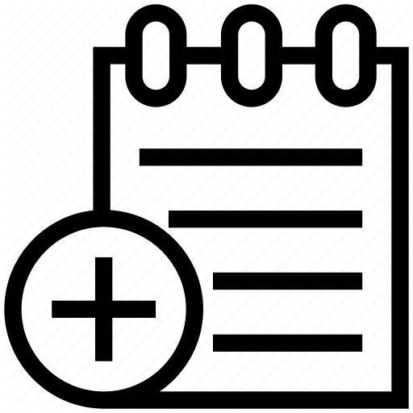
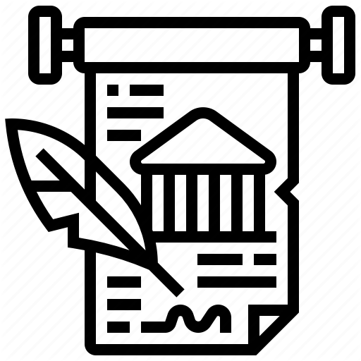

Operating System
An Operating System (OS) is a software that acts as an interface between computer hardware components and the user. Every computer system must have at least one operating system to run other programs. Applications like Browsers, MS Office, Notepad Games, etc., need some environment to run and perform its tasks.


Advantages of using Operating System
- Allows you to hide details of hardware by creating an abstraction
- Easy to use with a GUI
- Offers an environment in which a user may execute programs/applications
- The operating system must make sure that the computer system convenient to use
- Operating System acts as an intermediary among applications and the hardware components
- It provides the computer system resources with easy to use format
- Acts as an intermediator between all hardware's and software's of the system
Disadvantages of using Operating System
- If any issue occurs in OS, you may lose all the contents which have been stored in your system
- Operating system's software is quite expensive for small size organization which adds burden on them. Example Windows
- It is never entirely secure as a threat can occur at any time

History
- Operating systems were first developed in the late 1950s to manage tape storage
- The General Motors Research Lab implemented the first OS in the early 1950s for their IBM 701
- In the mid-1960s, operating systems started to use disks
- In the late 1960s, the first version of the Unix OS was developed
- The first OS built by Microsoft was DOS. It was built in 1981 by purchasing the 86-DOS software from a Seattle company
- The present-day popular OS Windows first came to existence in 1985 when a GUI was created and paired with MS-DOS.